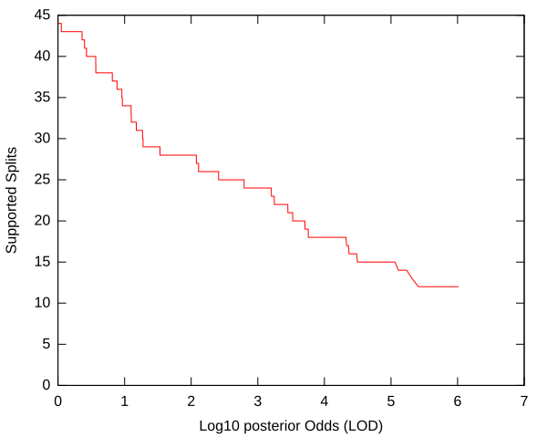
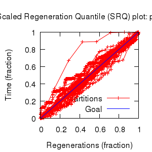
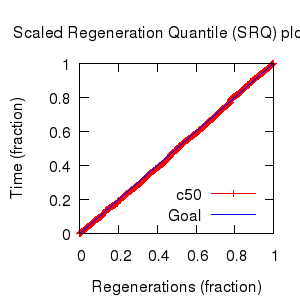

MCMC Post-hoc Analysis: 68 sequences
| Partition | Sequences | Lengths | Alphabet | Substitution Model | Indel Model | Scale Model |
|---|
| 1 |
ITS1-trimmed.fasta |
198 - 210 |
DNA | S1 = tn93+Rates.free[,,3] |
I1 = rs07 |
scale1 ~ gamma[0.5,2,0.0] |
| 2 |
5.8S.fasta |
15 - 16 |
DNA | S2 = tn93 |
none |
scale2 ~ gamma[0.5,2,0.0] |
| 3 |
ITS2-trimmed.fasta |
154 - 159 |
DNA | S1 = tn93+Rates.free[,,3] |
I2 = rs07 |
scale1 ~ gamma[0.5,2,0.0] |
| Statistic | Median | 95% BCI | ACT | ESS | burnin | PSRF-CI80% | PSRF-RCF |
|---|
| prior |
-92.04 |
(-144.6, -41.7) |
15.38 |
58154 |
202
|
0.9999 | 1.001
|
| prior_A1 |
-404.6 |
(-435, -379) |
6.32 |
141471 |
305
|
1 | 1.005
|
| prior_A3 |
-198.9 |
(-223.2, -180.5) |
30.94 |
28894 |
243
|
1 | 0.999
|
| likelihood |
-2967 |
(-2998, -2936) |
24.43 |
36596 |
458
|
1 | 1.002
|
| posterior |
-3059 |
(-3106, -3014) |
6.156 |
145250 |
175
|
0.9998 | 1.002
|
| Heat.beta |
1 |
| | | | | |
| Scale[1] |
1.12 |
(0.8305, 1.466) |
1.239 |
721714 |
208
|
0.9998 | 0.9981
|
| Scale[2] |
0.07922 |
(0.0365, 0.1333) |
1.025 |
872245 |
88
|
1 | 0.9998
|
| S1/tn93:pi[A] |
0.1846 |
(0.1552, 0.2146) |
3.545 |
252216 |
324
|
0.9998 | 1.002
|
| S1/tn93:pi[C] |
0.313 |
(0.2775, 0.3489) |
3.39 |
263770 |
281
|
1 | 0.9989
|
| S1/tn93:pi[G] |
0.2712 |
(0.2367, 0.307) |
4.068 |
219797 |
202
|
1 | 0.9972
|
| S1/tn93:pi[T] |
0.2303 |
(0.1992, 0.2623) |
3.56 |
251124 |
277
|
1 | 0.9975
|
| S1/tn93:kappaPyr |
3.985 |
(3.073, 4.999) |
2.181 |
409869 |
132
|
0.9999 | 0.9992
|
| S1/tn93:kappaPur |
2.703 |
(2.008, 3.506) |
1.738 |
514588 |
107
|
1 | 1
|
| S1/Rates.free:frequencies[1] |
0.4484 |
(0.177, 0.6577) |
9.809 |
91155 |
299
|
0.9999 | 1.001
|
| S1/Rates.free:frequencies[2] |
0.2686 |
(0.06414, 0.4905) |
4.871 |
183563 |
265
|
1 | 0.9999
|
| S1/Rates.free:frequencies[3] |
0.3009 |
(0.08774, 0.4655) |
8.649 |
103384 |
462
|
1 | 0.9999
|
| S1/Rates.free:rates[1] |
0.0526 |
(0.01176, 0.1016) |
7.273 |
122941 |
395
|
1.001 | 0.9995
|
| S1/Rates.free:rates[2] |
0.2366 |
(0.0834, 0.4381) |
12.36 |
72314 |
400
|
0.9999 | 1.003
|
| S1/Rates.free:rates[3] |
0.7146 |
(0.5035, 0.8538) |
11.56 |
77360 |
493
|
0.9999 | 1.005
|
| S2/tn93:pi[A] |
0.2448 |
(0.1833, 0.3111) |
2.709 |
330059 |
208
|
1 | 1.002
|
| S2/tn93:pi[C] |
0.2408 |
(0.1788, 0.3057) |
2.742 |
326094 |
326
|
1 | 0.997
|
| S2/tn93:pi[G] |
0.245 |
(0.1832, 0.3111) |
2.712 |
329659 |
249
|
1 | 1.002
|
| S2/tn93:pi[T] |
0.2655 |
(0.2006, 0.3318) |
2.712 |
329683 |
203
|
0.9998 | 1.002
|
| S2/tn93:kappaPyr |
2.761 |
(1.645, 4.184) |
1.048 |
852879 |
121
|
0.9999 | 1
|
| S2/tn93:kappaPur |
1.815 |
(1.07, 2.76) |
1.042 |
858170 |
152
|
1 | 1
|
| I1/rs07:mean_length |
1.268 |
(1.118, 1.458) |
1.731 |
516464 |
206
|
1 | 0.9998
|
| I1/rs07:log_rate |
-2.196 |
(-2.529, -1.868) |
2.156 |
414660 |
167
|
0.9999 | 0.9989
|
| I2/rs07:mean_length |
1.096 |
(1.002, 1.274) |
3.982 |
224536 |
197
|
1 | 0.998
|
| I2/rs07:log_rate |
-2.706 |
(-3.178, -2.258) |
3.815 |
234401 |
164
|
1 | 0.9952
|
| |A1| |
242 |
(239, 246) |
110.7 |
8077 |
473 |
0.8 | 1.006
|
| #indels1 |
52 |
(47, 56) |
4.178 |
213984 |
169 |
0.8333 | 1.002
|
| |indels1| |
65 |
(59, 71) |
5.523 |
161904 |
352 |
0.8889 | 1.002
|
| #substs1 |
210 |
(204, 215) |
45.76 |
19540 |
248 |
0.8571 | 1.001
|
| #substs2 |
12 |
(12, 12) |
1.132 |
790129 |
6 |
1 | 0.9998
|
| |A3| |
171 |
(169, 173) |
82.96 |
10777 |
382 |
0.6667 | 0.9953
|
| #indels3 |
25 |
(22, 28) |
25.03 |
35717 |
116 |
0.75 | 0.9997
|
| |indels3| |
26 |
(23, 30) |
16.99 |
52623 |
126 |
0.75 | 1.001
|
| #substs3 |
154 |
(149, 159) |
8.447 |
105853 |
182 |
0.8571 | 0.9984
|
| Scale1*|T| |
1.102 |
(0.9472, 1.269) |
1.957 |
456838 |
118
|
0.9998 | 0.9985
|
| Scale2*|T| |
0.07794 |
(0.03826, 0.125) |
1.026 |
871344 |
159
|
1 | 0.9965
|
| |A| |
430 |
(425, 434) |
149.3 |
5988 |
431 |
0.8889 | 1.003
|
| #indels |
79 |
(73, 84) |
13.19 |
67784 |
263 |
0.875 | 1.002
|
| |indels| |
94 |
(87, 101) |
12.91 |
69273 |
371 |
0.9114 | 1.001
|
| #substs |
377 |
(369, 384) |
29.7 |
30107 |
371 |
0.9 | 0.9998
|
| |T| |
0.984 |
(0.7546, 1.229) |
1 |
894127 |
176
|
0.9999 | 0.9985
|

| Partition support: Summary |
| Partition support graph: SVG |
Partition 1
|
|
|
Diff |
|
Min. %identity |
# Sites |
Constant |
Informative |
| Initial |
FASTA |
HTML |
Diff |
|
68.9% |
223 |
93 (41.7%) |
93 (41.7%) |
| Best (WPD) |
FASTA |
HTML |
|
AU |
69.4% |
243 |
93 (38.3%) |
96 (39.5%) |
Partition 2
|
|
|
Diff |
|
Min. %identity |
# Sites |
Constant |
Informative |
| Initial |
FASTA |
HTML |
|
|
68.8% |
16 |
4 (25%) |
5 (31.2%) |
Partition 3
|
|
|
Diff |
|
Min. %identity |
# Sites |
Constant |
Informative |
| Initial |
FASTA |
HTML |
Diff |
|
74.4% |
172 |
77 (44.8%) |
75 (43.6%) |
| Best (WPD) |
FASTA |
HTML |
|
AU |
78.6% |
171 |
81 (47.4%) |
62 (36.3%) |


- Partition uncertainty
- SRQ plot: partitions
- SRQ plot: c50
- Variation in split frequency estimates
| burnin (scalar) | ESS (scalar) | ESS (partition) | ASDSF | MSDSF | PSRF-CI80% | PSRF-RCF |
|---|
| 493 | 5988 | 1298.471 | 0.002 | 0.016
| 1.001 | 1.006 |
command line: bali-phy -c ITS.txt --name ITS-3.1.5
directory: /gpfs/fs0/data/wraycompute/br51/Work/3.1
| chain # | burnin | subsample | Iterations (after burnin) | subdirectory |
|---|
| 1 |
10957 |
1 |
137499 |
ITS-3.1.5-1 |
| 2 |
10957 |
1 |
104649 |
ITS-3.1.5-2 |
| 3 |
10957 |
1 |
112525 |
ITS-3.1.5-3 |
| 4 |
10957 |
1 |
109521 |
ITS-3.1.5-4 |
| 5 |
10957 |
1 |
112585 |
ITS-3.1.5-5 |
| 6 |
10957 |
1 |
111076 |
ITS-3.1.5-6 |
| 7 |
10957 |
1 |
107630 |
ITS-3.1.5-7 |
| 8 |
10957 |
1 |
98615 |
ITS-3.1.5-8 |
| P(data|M) = -2999.671 +- 0.340
|
Complete sample: 982043
topologies |
95% Bayesian credible interval: 932941 topologies |
| topology | ~ uniform on tree topologies |
| branch lengths | ~ iid[num_branches[T],gamma[0.5,div[2,num_branches[T]],0.0]] |
| S1 | = |
tn93+Rates.free[,,3]
| tn93:kappaPur | ~ | log_normal[log[2],0.25]
|
| tn93:kappaPyr | ~ | log_normal[log[2],0.25]
|
| tn93:pi | ~ | dirichlet_on[letters[a],1]
|
| Rates.free:rates | ~ | dirichlet[n,2]
|
| Rates.free:frequencies | ~ | dirichlet[n,3]
|
|
| S2 | = |
tn93
| tn93:kappaPur | ~ | log_normal[log[2],0.25]
|
| tn93:kappaPyr | ~ | log_normal[log[2],0.25]
|
| tn93:pi | ~ | dirichlet_on[letters[a],1]
|
|
| I1 | = |
rs07
| rs07:log_rate | ~ | laplace[-4,0.707]
|
| rs07:mean_length | ~ | exponential[10,1]
|
|
| I2 | = |
rs07
| rs07:log_rate | ~ | laplace[-4,0.707]
|
| rs07:mean_length | ~ | exponential[10,1]
|
|
{kind=link}
{kind=link}
{kind=link}
{kind=link}
{kind=link}
{kind=link}
{kind=link}
{kind=link}
{kind=link}
{kind=link}
{kind=link}
{kind=link}